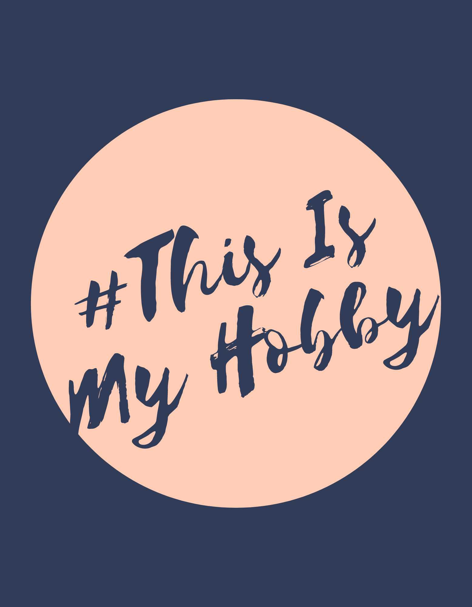
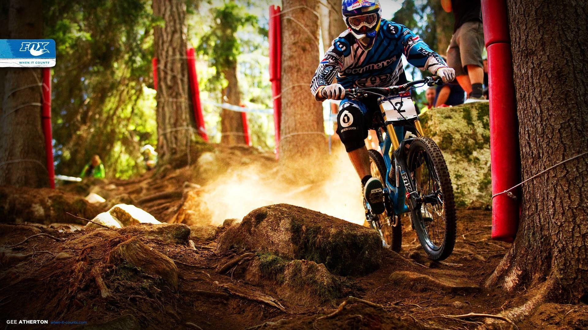
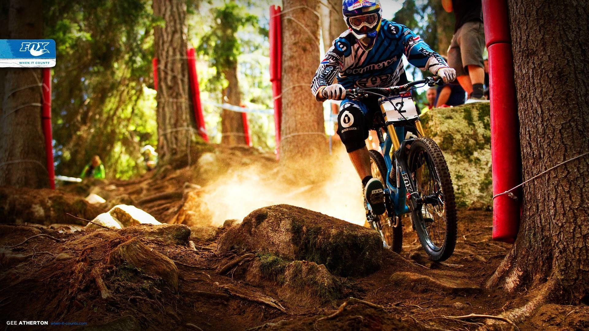

One of my hobbies is playing video games which is now known as E-Sport. The games I play are Call of Duty Mobile and Mobile Lagend.
E-SPORT

CYCLING
I have been interested in cycling since I was in school. I have been doing this mountain bike hobby since grade 5 in elementary school until now. What makes me love this cycling activity is that I can see the atmosphere of nature and breathe the fresh air when I cycle in an area full of natural resources as well as I can maintain a healthy lifestyle.

 
